Tanuki (Dylan)
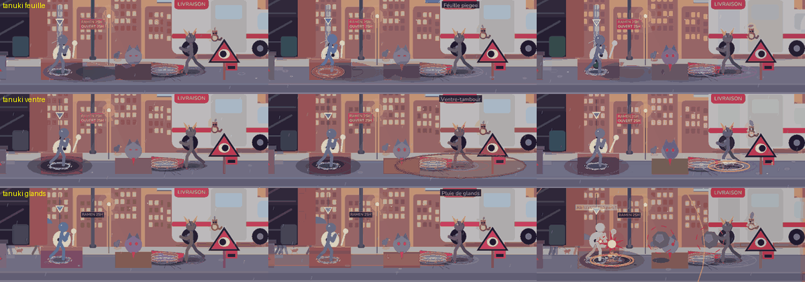
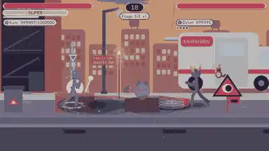
Feuille piegee
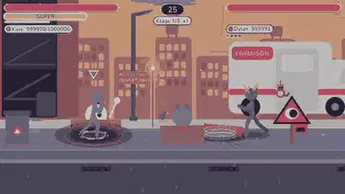
Ventre-tambour
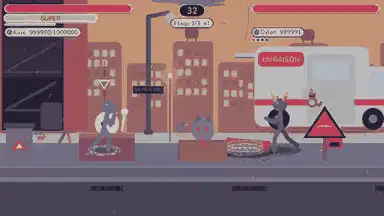
Pluie de glands
Bakeneko (Salvatore)
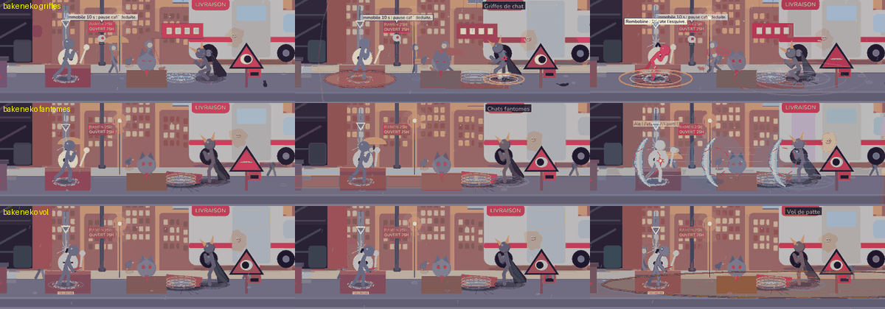
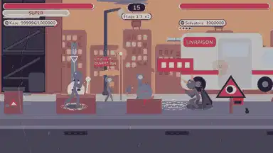
Griffes de chat
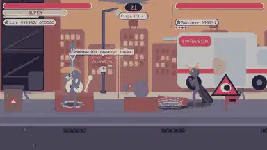
Chats fantomes
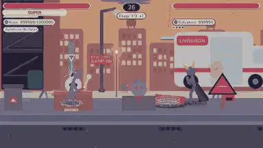
Vol de patte
Ryu (Shogun Tsukikage)
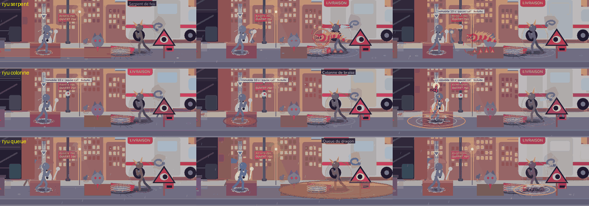
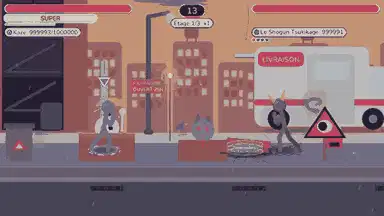
Serpent de feu
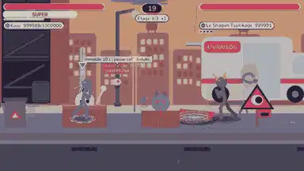
Colonne de braise
Queue du dragon
Hannya (Ren Takeda)
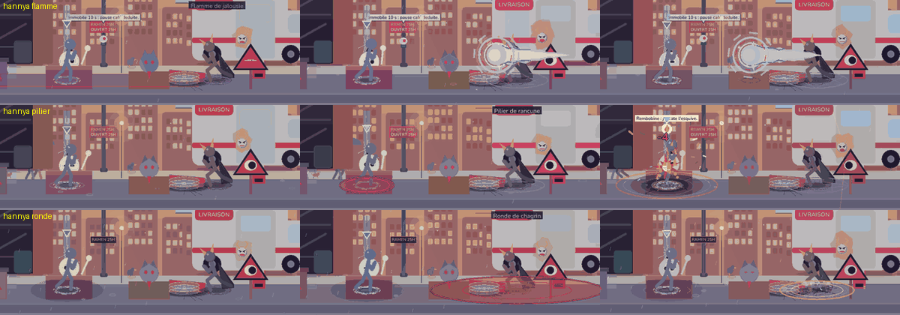
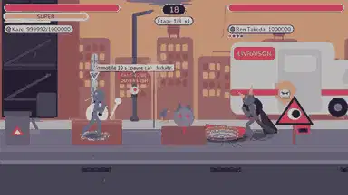
Flamme de jalousie
Pilier de rancune
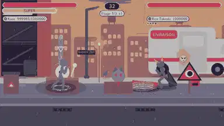
Ronde de chagrin
Mizuchi (Maître Noir)
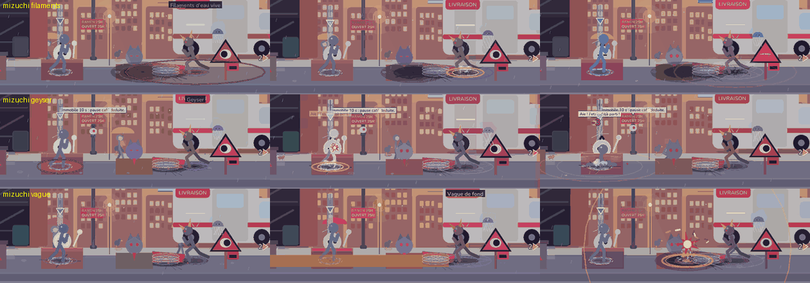
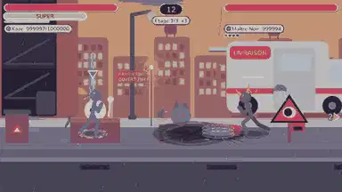
Filaments d'eau vive
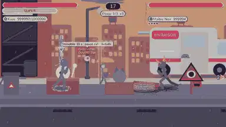
Geyser
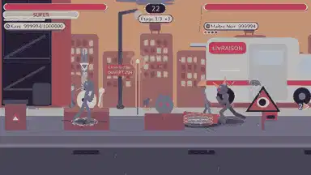
Vague de fond
Karura (Senateur Aldous)
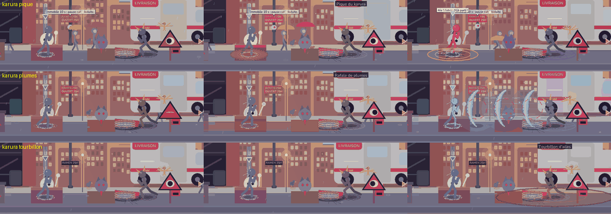
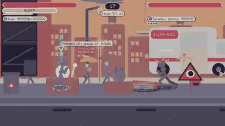
Pique du karura
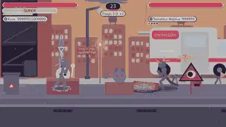
Rafale de plumes
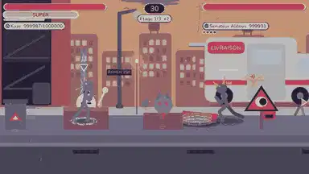
Tourbillon d'ailes
Kirin (Valerie Kogen)
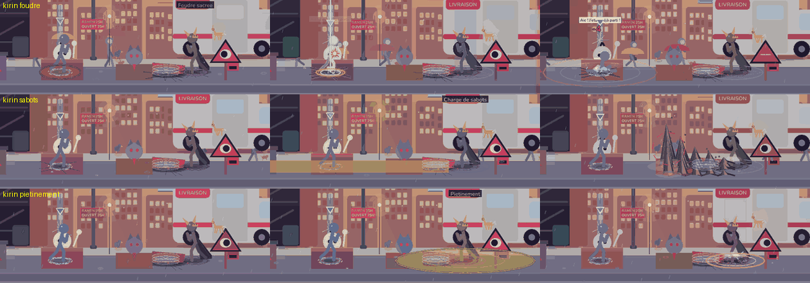
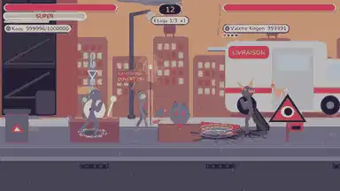
Foudre sacree
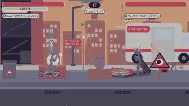
Charge de sabots
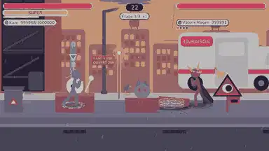
Pietinement
Nimbus (Saint Quelquechose)
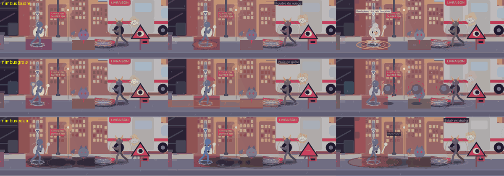
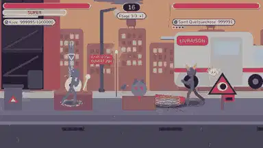
Foudre du nuage
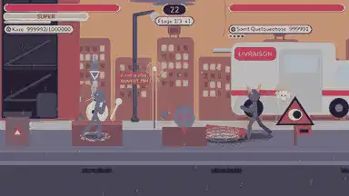
Pluie de grêle
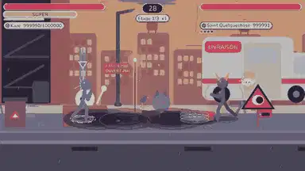
Éclair en chaîne
Kaeru (Roi Crapaud Bedon)
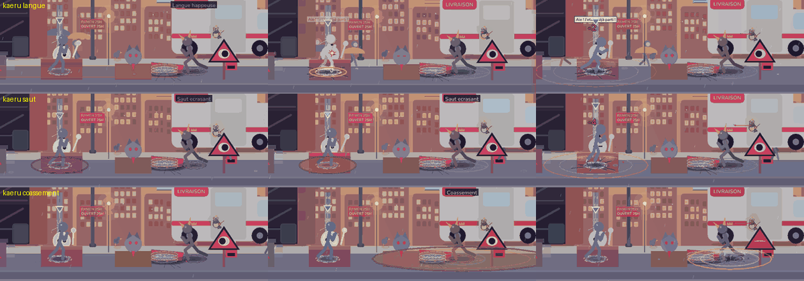
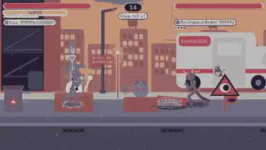
Langue happeuse
Saut ecrasant
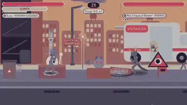
Coassement
Kagami (Seigneur Sans Reflet)
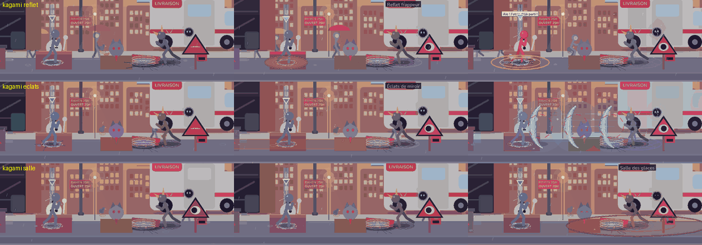
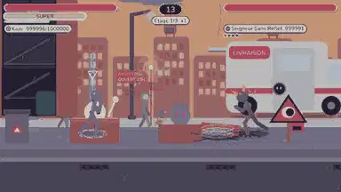
Reflet frappeur
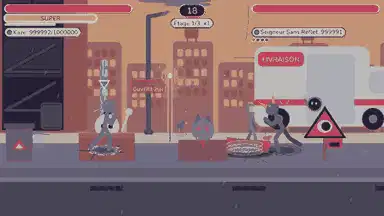
Éclats de miroir
Salle des glaces
Yeti (Colosse du Sommet)
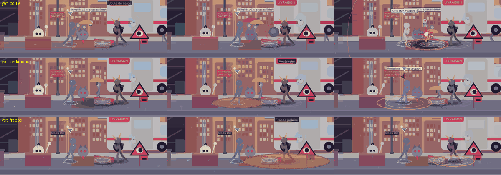
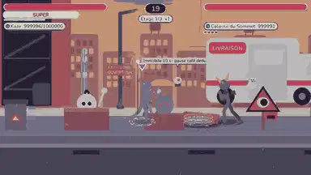
Boule de neige
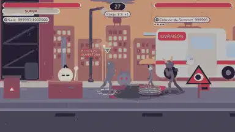
Avalanche
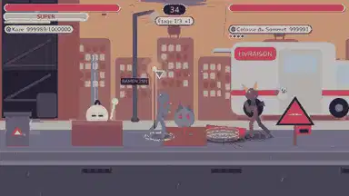
Frappe polaire
Mokka (Grand Barista Expresso)
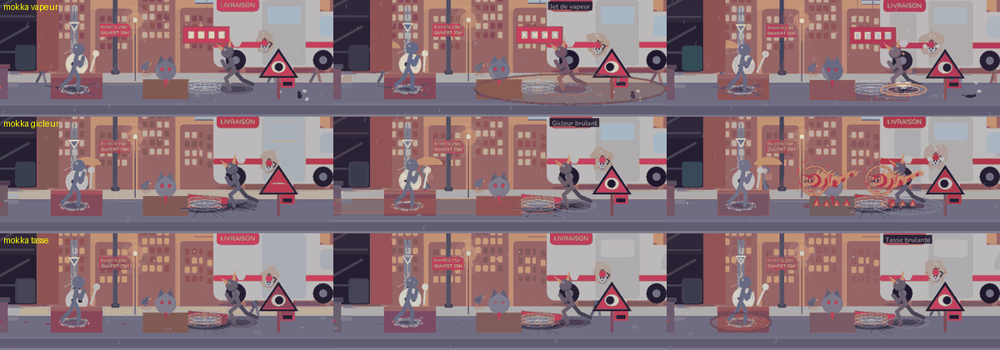
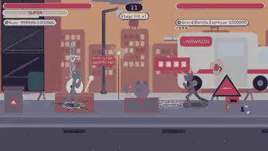
Jet de vapeur
Gicleur brulant
Tasse brulante
Sphinx (Pharaon du Grand Marchandage)
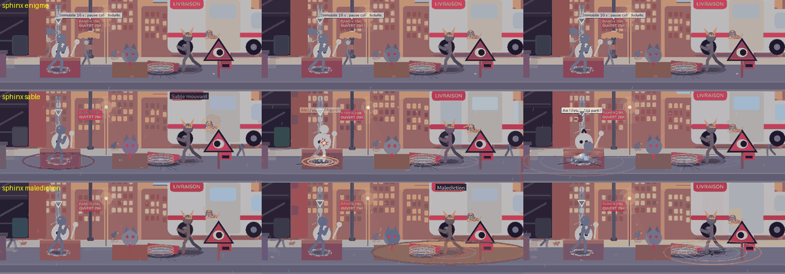
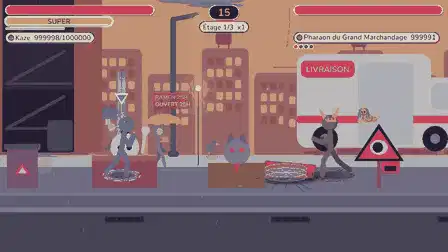
Enigme
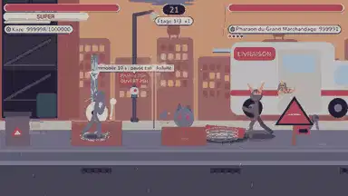
Sable mouvant
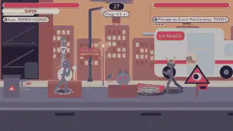